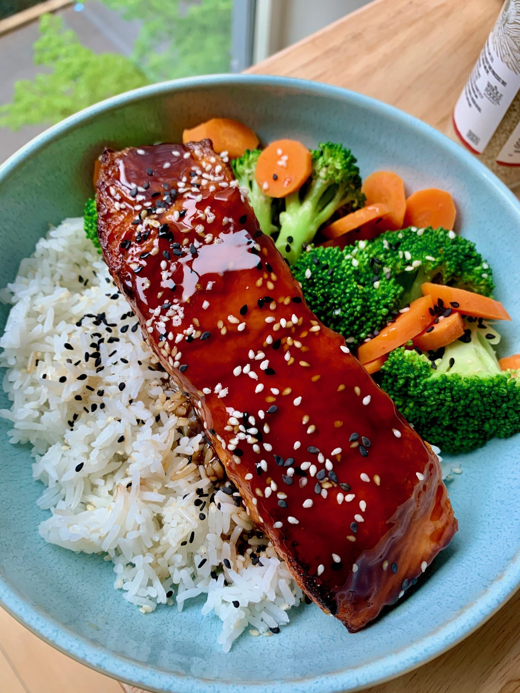

Teriyaki Salmon

Salmon fillets cooked with a teriyaki glaze, a dish full of umami deliciousness. Quick, simple, tasty.
Ingredients
- 1 salmon fillet
- 2 tbsp soy sauce
- 1 tbsp mirin
- 2 tbsp sake
- 1 tbsp sugar
- green onion (for garnish)
Steps
- In a small dish, prepare teriyaki sauce. 1 tbsp sugar, 1 tbsp mirin, 1 tbsp sake, 2 tbsp soy sauce. Mix until sugar dissolves
- Season fillet with salt and pepper
- Heat frying pan to medium, add oil and butter
- Cook salmon skin side up for three minutes (note: most advise skin down first, but I think skin side up works better)
- Add 1 tbsp sake to pan and quickly cover with lid - cook for another 3 minutes
- Remove salmon from pan and quickly rinse pan. Put in teriyaki sauce
- Reintroduce salmon to pan and ladle the sauce of the fillet. Continue until sauce has thick consistency and salmon has a nice glaze
- Plate and serve with green onion garnish. Serve alongside rice, miso soup, and vegetable/salad side dishes.